重大更新准备送审 · iPhone · iPad · Mac
重大更新准备送审 · iPhone · iPad · Mac 键盘星球
让孩子先练准确与稳定，再逐步提速。键盘星球把 32 个训练模式整理成 9 个学习星球与 72 节短课，并加入本机弱键分析、家庭进度、题库导入导出和 21 种中国神兽里程碑庆典。

9 个星球 · 72 节短课
可跳过定级、课程前置、星级、继续上次课程与每日五分钟，低龄阶段准确优先。
本机训练实验室
分析错键、延迟和二元/三元组合，提供弱键专项、8 种标准测试与个人最佳幽灵。
6 个家庭档案 · 21 神兽
本地孩子档案与家长趋势不需要账号，每个真实学习里程碑都值得被鼓励。
PARENT-CREATED PRACTICE
把孩子正在学的内容，放进游戏里
家长可以自己准备单词、短句、拼音、成语接龙和算式。自定义题会与内置题交替加权，哪怕只添加一两条，也能在练习中很快出现。
90英文单词
55英文短句
43汉字拼音
72常用成语
1073加减乘除与混合算式
MAJOR UPDATE · PREPARING FOR APP REVIEW
迄今最大的一次学习体系升级
以下功能已完成本地开发与验证，正在准备作为一次 App Enhancements 重大更新提交审核；当前商店版本可能尚未包含。
- 完整学习路线9 个星球、72 节 2～5 分钟短课、首次定级、课程前置、星级与下一步建议。
- 个性化训练实验室本机分析近期与长期弱键、延迟及组合，提供标准测试、热力图、曲线和离线幽灵。
- 家庭档案与报告最多 6 个本地孩子档案，查看今天、7 天、30 天趋势、课程、弱键与练习建议。
- Mac 重整与 21 神兽重新组织首页和设置，扩充题库，并让 21 种神兽以各自的造型、入场与声音鼓励进步。
EDITORIAL & APP STORE MATERIALS
公开的重大更新与精选资料
这里公开说明产品故事、无障碍与隐私做法，并提供高分辨率简体中文媒体素材，仅包含适合产品介绍与编辑审阅的内容。
MAC · MAJOR UPDATE
Mac 新版真实界面
重新整理首页、学习路线、实体键盘练习、训练实验室和神兽里程碑；画面来自准备送审的真实 App 构建。
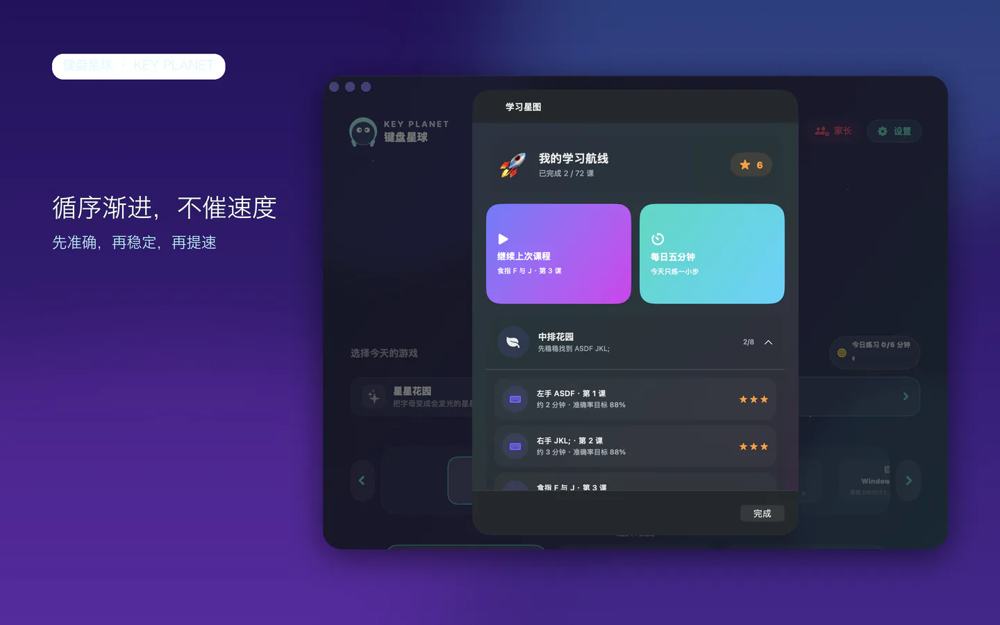
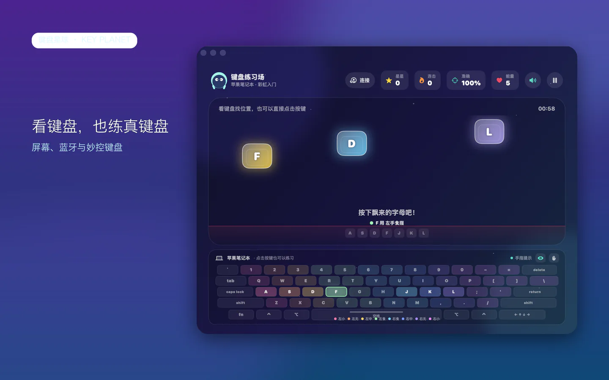
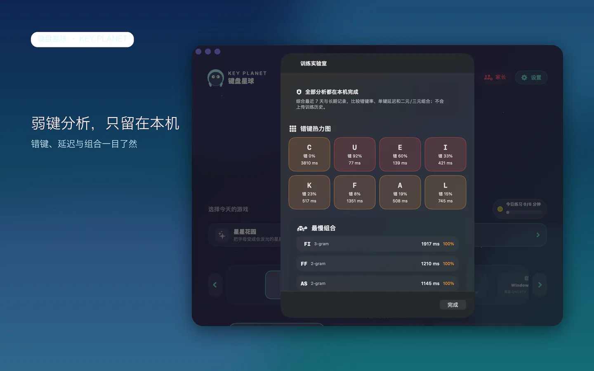
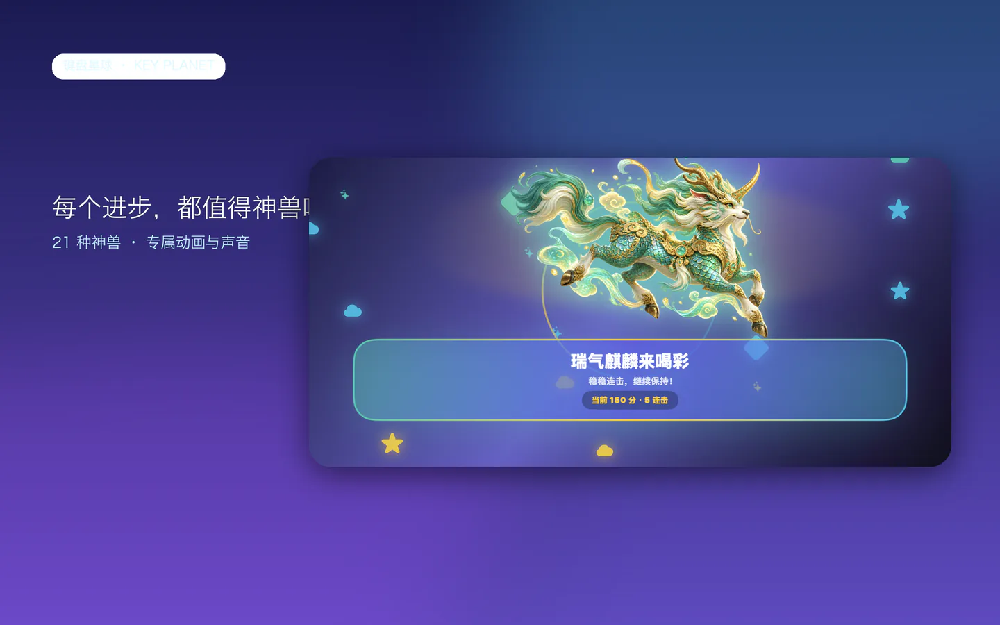
IPHONE · MAJOR UPDATE
iPhone 新版真实界面
简体中文 6.9 英寸竖屏展示图，覆盖本次重大更新的五个核心故事。
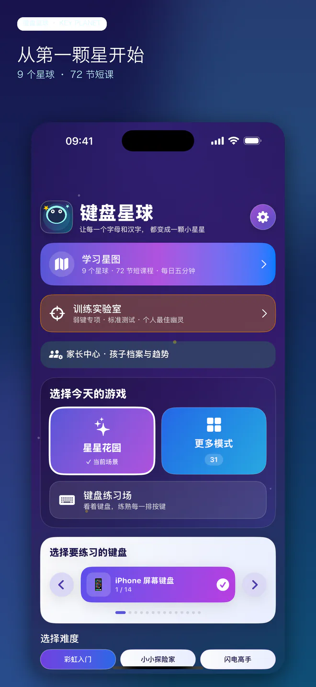
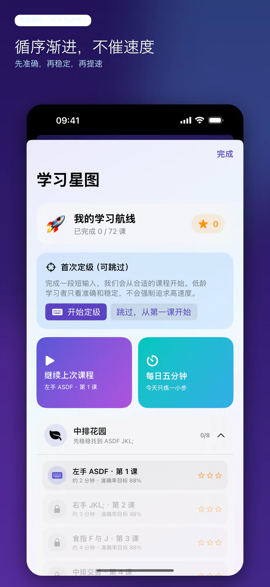
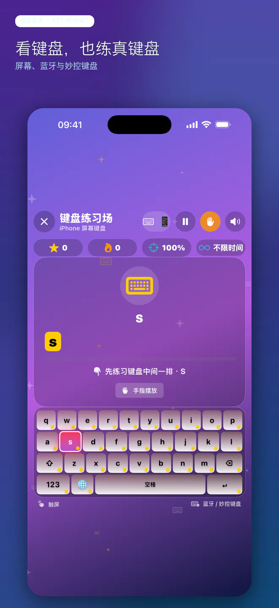
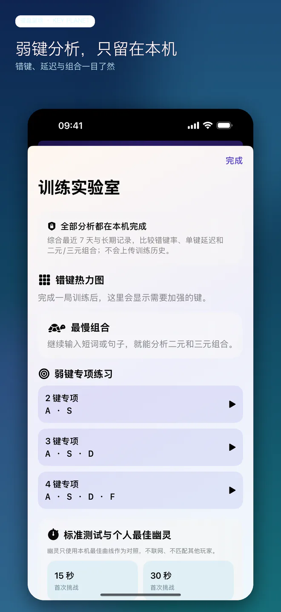
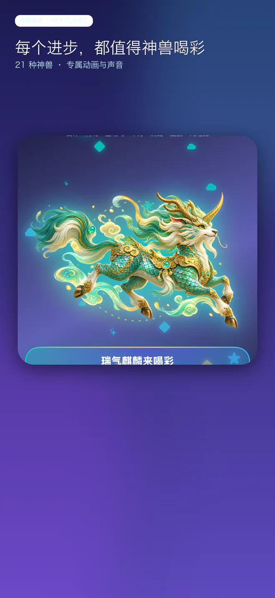
IPAD · MAJOR UPDATE
iPad 新版真实界面
13 英寸竖屏展示图，同时适配屏幕键盘、蓝牙键盘与妙控键盘学习场景。
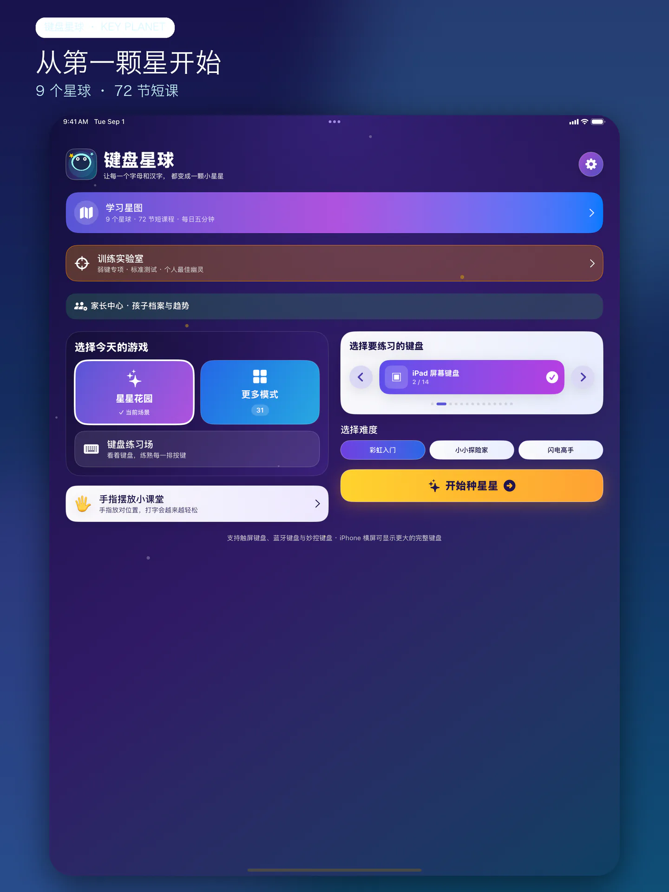

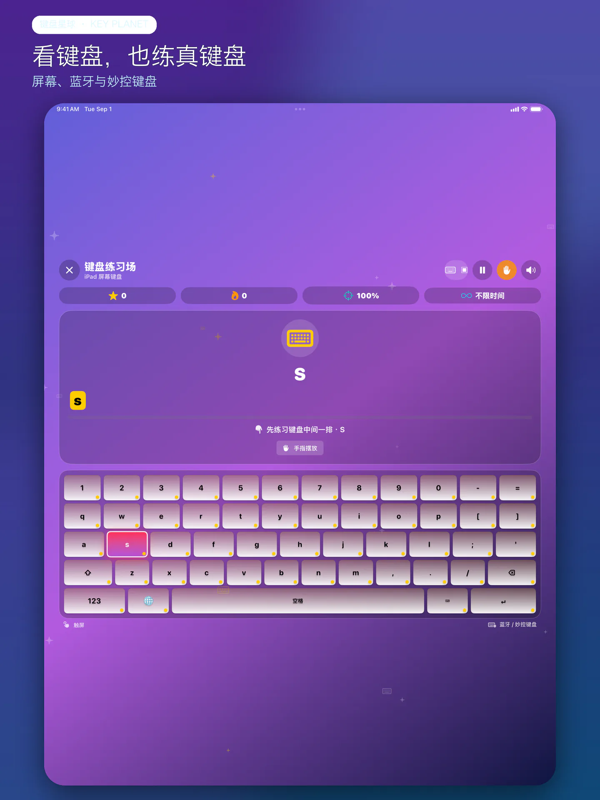
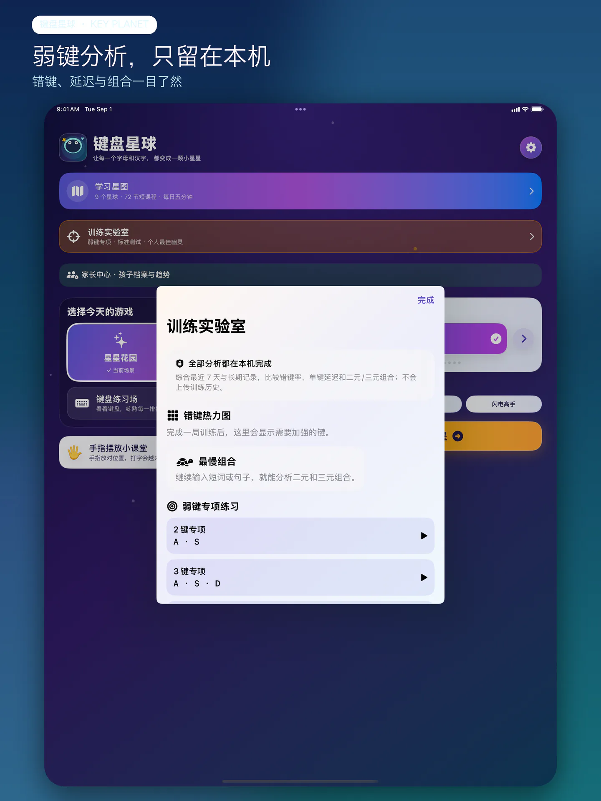
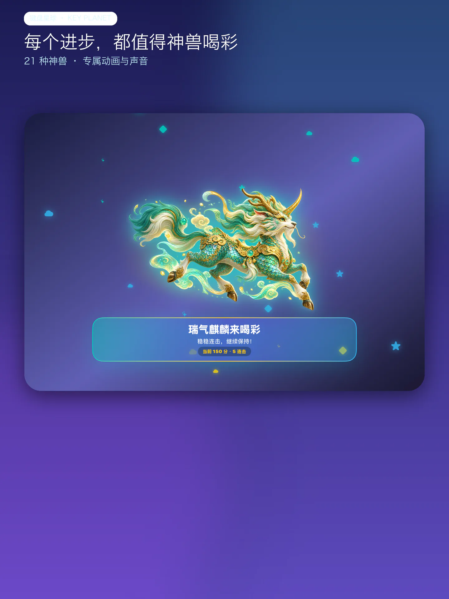